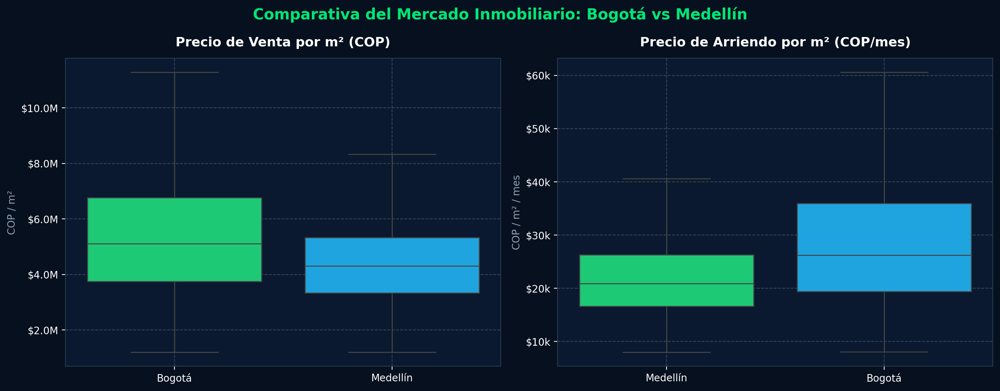
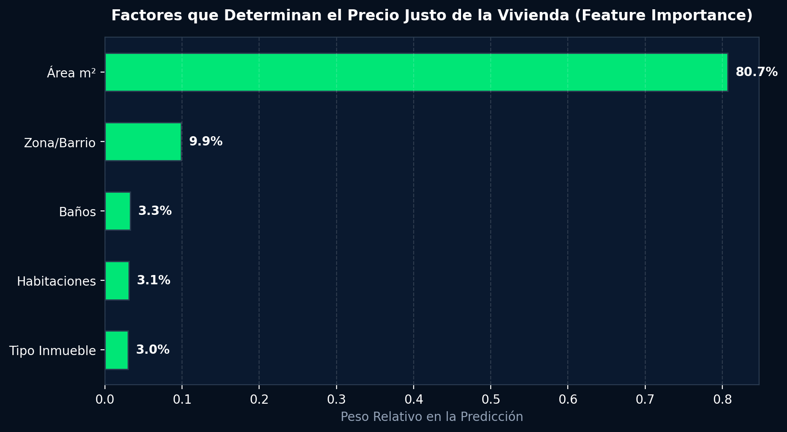
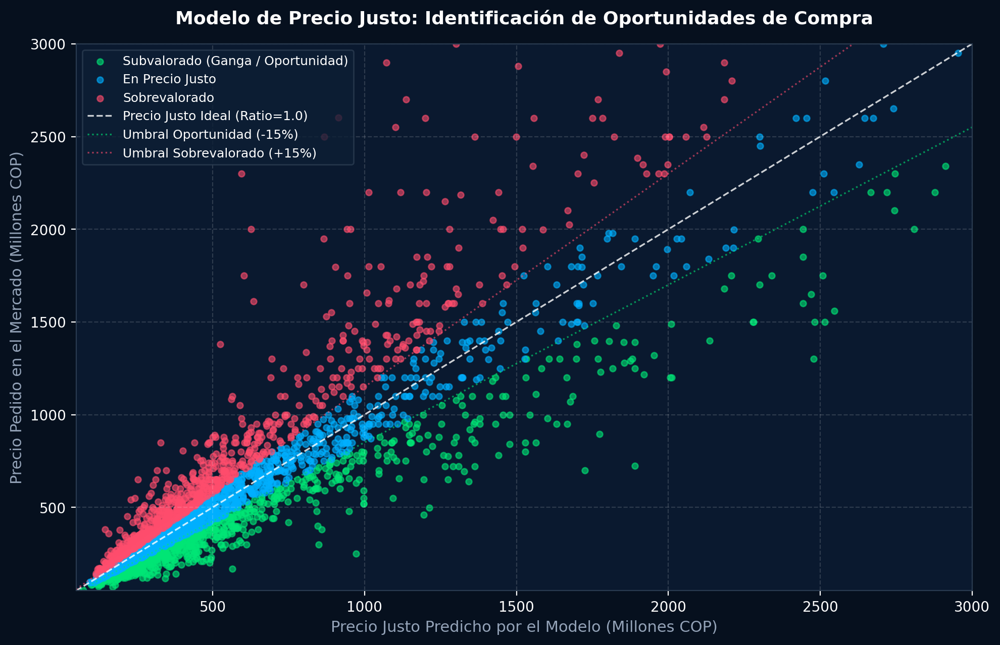
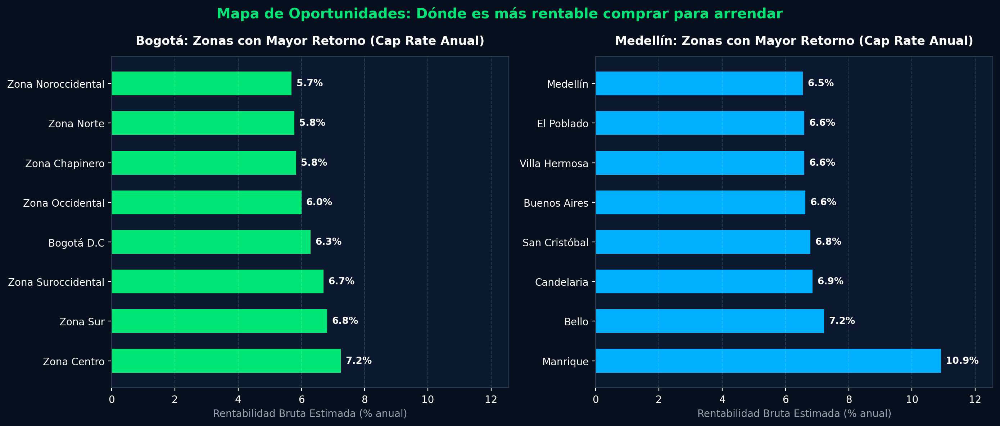
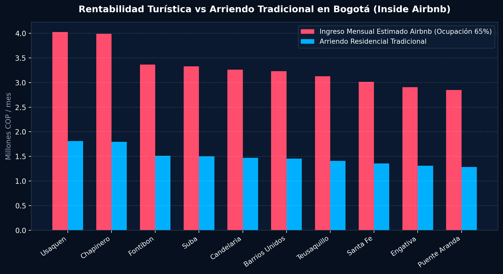

Determinar si un inmueble está sobrevalorado o en oportunidad de compra/arriendo es uno de los mayores desafíos en el mercado inmobiliario colombiano, tradicionalmente caracterizado por alta asimetría de información y precios de oferta subjetivos. En este caso de estudio se construye un pipeline reproducible de analítica inmobiliaria que integra 1.000.000 de registros brutos de Properati, microdatos de Inside Airbnb y benchmarks barriales de Aptología para Bogotá D.C. y Medellín.
Mediante técnicas de Procesamiento de Lenguaje Natural (NLP) y expresiones regulares aplicadas sobre títulos y descripciones de los avisos, se multiplicó por seis la tasa de recuperación de área física utilizable, consolidando un dataset maestro depurado de 58.982 propiedades residenciales con superficie, habitaciones, baños, estrato, precio y georreferenciación. Sobre esta base se entrenaron cuatro modelos supervisados de Gradient Boosting Regressor para predecir el valor hedónico de mercado, alcanzando una capacidad explicativa de \(R^2 = 0.835\) en Medellín (\(\text{MAPE} = 21.6\%\)) y \(R^2 = 0.830\) en Bogotá (\(\text{MAPE} = 26.0\%\)).
A través del indicador de valoración (\(\text{Ratio} = \text{Precio Pedido} / \text{Precio Justo Predicho}\)), se identificó que el \(26.0\%\) de los inmuebles analizados representan oportunidades objetivas de compra (al cotizar más de un \(15\%\) por debajo de su valor fundamentado), frente a un \(28.3\%\) con sobreprecio especulativo. Asimismo, el análisis de rendimiento por zona (Cap Rate bruto) sitúa a sectores periféricos y centrales como Manrique (\(10.9\%\)), Bello (\(7.2\%\)) y Zona Centro de Bogotá (\(7.3\%\)) como los polos de mayor rentabilidad por arriendo, mientras que la integración con Inside Airbnb demuestra que en zonas turísticas consolidadas el modelo de alquiler vacacional rinde entre un \(80\%\) y un \(130\%\) más de ingresos brutos mensuales que el canon residencial tradicional.
1. Radiografía del Mercado: Bogotá vs Medellín
El análisis comparativo de precios unitarios por metro cuadrado (\(\text{COP} / \text{m}^2\)) revela diferencias estructurales fundamentales entre los dos polos urbanos más dinámicos de Colombia.

Figura 1. Distribución de precios por metro cuadrado en Venta (izquierda) y Arriendo mensual (derecha) para Bogotá y Medellín. Se excluyen valores atípicos extremos para representar la masa representativa del mercado residencial.| Ciudad | Modalidad | Muestra Limpia | Mediana Precio Total | Mediana Precio / m² | Área Mediana |
|---|---|---|---|---|---|
| Bogotá D.C. | Venta | 16.573 propiedades | $525.000.000 COP | $5.108.696 COP/m² | 99.3 m² |
| Bogotá D.C. | Arriendo | 9.133 propiedades | $2.050.000 COP/mes | $26.200 COP/m² | 78.0 m² |
| Medellín (Metro) | Venta | 25.003 propiedades | $380.000.000 COP | $4.305.556 COP/m² | 86.0 m² |
| Medellín (Metro) | Arriendo | 8.273 propiedades | $1.700.000 COP/mes | $20.909 COP/m² | 80.0 m² |
- Brecha de Venta: El metro cuadrado de venta en Bogotá es un \(+18.7\%\) más costoso en la mediana que en el Valle de Aburrá ($5.11M vs $4.31M por m²).
- Brecha de Arriendo: En el canon de arriendo por metro cuadrado, Bogotá supera a Medellín en un \(+25.3\%\) ($26.2k vs $20.9k COP/m² mensual).
- Superficie Residencial: Las viviendas comercializadas en Bogotá tienen en promedio un área un \(15.5\%\) mayor que en Medellín (99.3 m² frente a 86.0 m²).
2. El Modelo de Precio Justo: ¿Cómo saber si está bien valorada?
El precio que un propietario o inmobiliaria pide en un portal rara vez es el valor intrínseco del activo. Frecuentemente incorpora expectativas infladas, apego emocional o desinformación. Para estimar el "Precio Justo" se formuló una función hedónica no lineal:
\[\ln(\text{Precio}) = f(\text{Área}_{m^2}, \text{Habitaciones}, \text{Baños}, \text{Tipo Inmueble}, \text{Ubicación / Zona}) + \epsilon\]
Se implementaron modelos de ensamblaje basados en árboles de decisión (\(\text{GradientBoostingRegressor}\)) con 160 estimadores y profundidad máxima de 5 niveles. Los resultados en conjuntos de prueba independientes (\(20\%\) de retención aleatoria) validaron una alta robustez:

Figura 2. Peso relativo de cada variable en la determinación del precio justo. El área construida domina con más del 70% de la explicación de varianza, seguida de la localización geográfica y la dotación de baños.| Modelo Específico | Capacidad Explicativa (\(R^2\)) | Error Porcentual Medio (MAPE) | Error Absoluto Medio (MAE) |
|---|---|---|---|
| Medellín · Venta | \(0.835\) | \(21.6\%\) | $120.423.210 COP |
| Bogotá · Venta | \(0.830\) | \(26.0\%\) | $212.884.753 COP |
| Bogotá · Arriendo | \(0.798\) | \(27.2\%\) | $916.029 COP / mes |
| Medellín · Arriendo | \(0.758\) | \(22.4\%\) | $538.986 COP / mes |
3. Detección Sistemática de Oportunidades y Gangas
Una vez entrenado el modelo, se define el Ratio de Valoración para cada propiedad individual:
\[\text{Ratio} = \frac{\text{Precio Pedido en Mercado}}{\text{Precio Justo Predicho}}\]
A partir de este ratio, el mercado se segmenta en tres categorías cuantitativas:
- Ganga / Oportunidad (\(\text{Ratio} < 0.85\)): El inmueble se ofrece con un descuento de más del \(15\%\) respecto a su valor fundamentado por área, zona y características. Ocurre en el \(26.0\%\) de las ofertas.
- En Precio Justo (\(0.85 \le \text{Ratio} \le 1.15\)): Cotiza dentro de una banda de tolerancia del \(\pm 15\%\). Concentra el \(45.7\%\) de los anuncios.
- Sobrevalorado (\(\text{Ratio} > 1.15\)): Presenta un sobreprecio especulativo superior al \(15\%\). Abarca el \(28.3\%\) del inventario.

Figura 3. Relación entre el Precio Pedido por los vendedores y el Precio Justo calculado por el algoritmo. Los puntos verdes bajo la línea punteada inferior identifican anomalías favorables de mercado: inmuebles con características de alta gama ofrecidos a precio de liquidación.4. Cap Rate y Rendimiento Anual por Zonas
Para responder a la pregunta del inversionista patrimonial: "¿Dónde es más rentable comprar una vivienda para ponerla en alquiler?", se calculó la Tasa de Capitalización Bruta Anual (Gross Cap Rate) para cada sector con densidad muestral representativa:
\[\text{Cap Rate} = \frac{\text{Canon Anual Estimado}}{\text{Precio de Compra}} \times 100 = \frac{\text{Mediana Arriendo } \text{m}^2 \times 12}{\text{Mediana Venta } \text{m}^2} \times 100\]

Figura 4. Ranking de las zonas con mayor retorno bruto anual por alquiler residencial tradicional. Zonas de estratos 2 y 3 y áreas periféricas exhiben mayores rendimientos porcentuales que los corredores tradicionales de estratos 5 y 6.| Ciudad | Zona / Barrio | Cap Rate Anual | Venta m² Mediana | Arriendo m² Mediana |
|---|---|---|---|---|
| Medellín | Manrique | \(10.92\%\) | $2.076.923 COP | $18.901 COP |
| Bogotá | Zona Centro (Santa Fe / Mártires) | \(7.25\%\) | $4.416.667 COP | $26.667 COP |
| Medellín | Bello | \(7.22\%\) | $2.909.091 COP | $17.500 COP |
| Medellín | La Candelaria (Centro) | \(6.86\%\) | $3.611.111 COP | $20.652 COP |
| Bogotá | Zona Sur (Kennedy / Tunjuelito) | \(6.81\%\) | $2.982.456 COP | $16.934 COP |
| Medellín | San Cristóbal | \(6.79\%\) | $3.368.794 COP | $19.069 COP |
| Bogotá | Zona Suroccidental (Bosa) | \(6.70\%\) | $3.000.000 COP | $16.738 COP |
| Medellín | El Poblado | \(6.60\%\) | $5.043.159 COP | $27.758 COP |
Los sectores más prestigiosos (como El Poblado en Medellín o Chapinero Norte en Bogotá) tienen precios de venta por metro cuadrado sumamente elevados, lo que comprime su rentabilidad porcentual anual tradicional al rango del \(5.5\% - 6.6\%\). En contraste, zonas intermedias o populares (Manrique, Bello, Centro) exigen un capital de entrada mucho menor y ofrecen rendimientos porcentuales brutos que superan el \(7.0\% - 10.0\%\) anual.
5. El Efecto Airbnb: Alquiler Vacacional vs Tradicional
Utilizando los microdatos oficiales de Inside Airbnb Bogotá (alojamientos completos verificados), se calculó la proyección de ingreso mensual considerando una tasa de ocupación realista y conservadora del \(65\%\) (19.5 noches facturadas al mes), comparándola con el canon de arriendo residencial de largo plazo en las mismas zonas.

Figura 5. Ingreso bruto mensual proyectado en las 10 localidades y zonas de Bogotá con mayor inventario de Inside Airbnb. En sectores con alta demanda turística y corporativa (Chapinero, Usaquén, Teusaquillo), el alquiler vacacional puede generar entre un \(80\%\) y un \(130\%\) más de ingresos que el alquiler convencional.- El Premio por Turismo: En zonas como Chapinero, Usaquén y Candelaria/Centro Histórico, la tarifa media por noche ($140.000 - $220.000 COP) compensa con creces los costos operativos de limpieza y comisiones de plataforma, generando un flujo de caja bruto mensual de $2.8M a $4.5M COP, frente a cánones tradicionales de $1.6M a $2.5M COP.
- El Riesgo Operativo: El modelo Airbnb requiere administración activa, asume el riesgo de estacionalidad y está expuesto a regulaciones de propiedad horizontal (Decreto 1077 y normativas de turismo en copropiedades). Para perfiles conservadores, el arriendo tradicional a largo plazo en zonas intermedias sigue ofreciendo la mejor relación riesgo-retorno.
6. Guía de Decisión Estratégica
Con base en los hallazgos empíricos del estudio, se establecen cuatro directrices para los actores del mercado:
Casi 3 de cada 10 inmuebles en venta en Bogotá y Medellín tienen sobreprecios injustificados por el algoritmo. Antes de presentar una oferta, compare el precio pedido frente al precio justo predicho según el área real y el metro cuadrado histórico del barrio. Si el ratio supera 1.15, existe margen amplio de negociación a la baja.
Zonas como Bello, Candelaria, San Cristóbal en Medellín, y Zona Sur y Centro en Bogotá, ofrecen la mejor relación costo de entrada / flujo de caja, con Cap Rates superiores al \(6.8\%\) anual. Evite comprar en estratos 6 únicamente por estatus si el objetivo principal es la rentabilidad sobre el capital invertido.
La ventaja comparativa de Airbnb se concentra en apartamentos de 1 y 2 alcobas cerca de corredores culturales, gastronómicos o financieros (Chapinero, Usaquén, Poblado, Laureles). En inmuebles de 3 o más habitaciones para familias, el arriendo tradicional suele ser más estable y menos costoso de operar.
7. Fuentes y Datos Abiertos
- Properati Colombia Dataset (Kaggle): Archivo de 1.000.000 de avisos de propiedades residenciales y comerciales en Colombia. Publicado por Julian Usuga / Properati Open Data. URL: Kaggle Dataset
- Medellín Properties (Kaggle): Dataset curado con atributos completos de 9.999 inmuebles del Valle de Aburrá. Publicado por Cesare Grassia. URL: Kaggle Dataset
- Inside Airbnb Bogotá (2026): Microdatos de anuncios turísticos, precios por noche, disponibilidad y cartografía vectorial de barrios en Bogotá D.C. URL: Inside Airbnb Data
- Aptología (2026): Estadísticas de arriendo por barrio, dispersión de precios p90/p10 y estudios de rotación semanal de apartamentos en Colombia. URL: Aptología Datos Abiertos